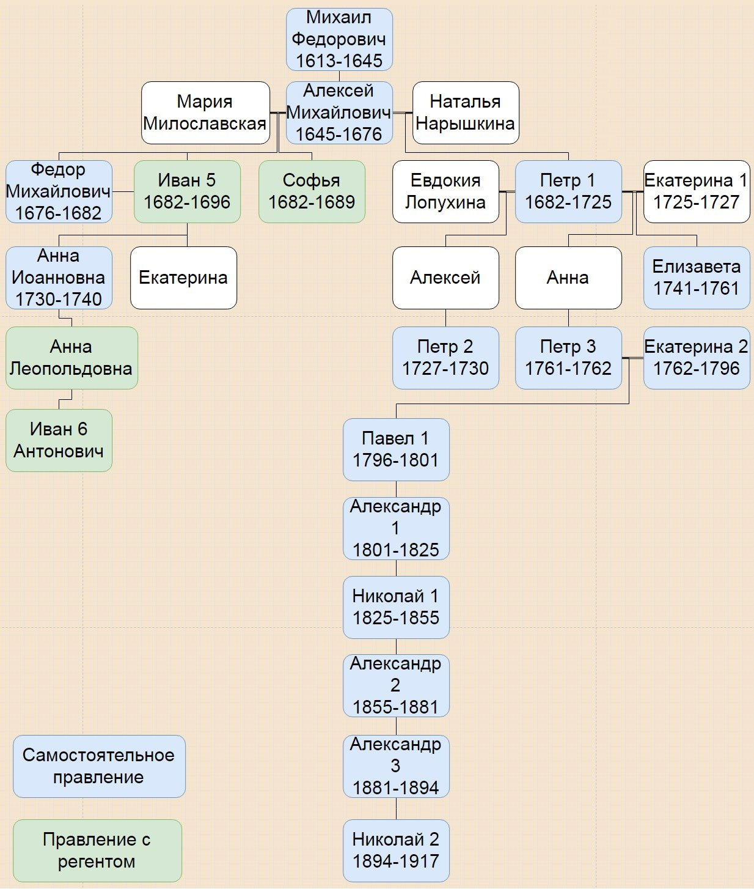

Рома́новы — русский боярский род, носивший такую фамилию с конца XVI века; с 1613 года — династия русских царей и с 1721 года — императоров всероссийских, а впоследствии — царей Польши, великих князей Литвы и Финляндии, герцогов Ольденбурга и Гольштейн-Готторпа и великих магистров Мальтийского Ордена.
